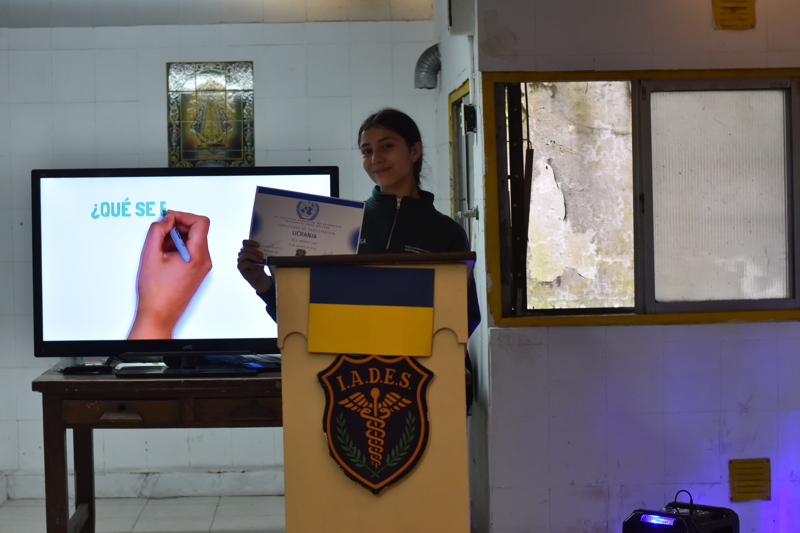
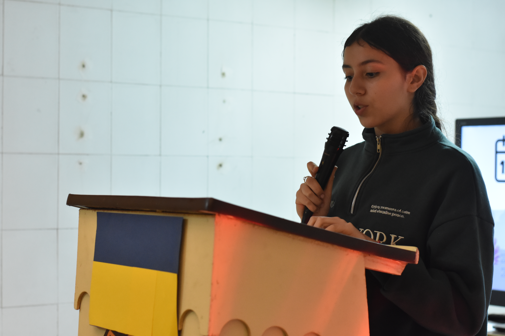
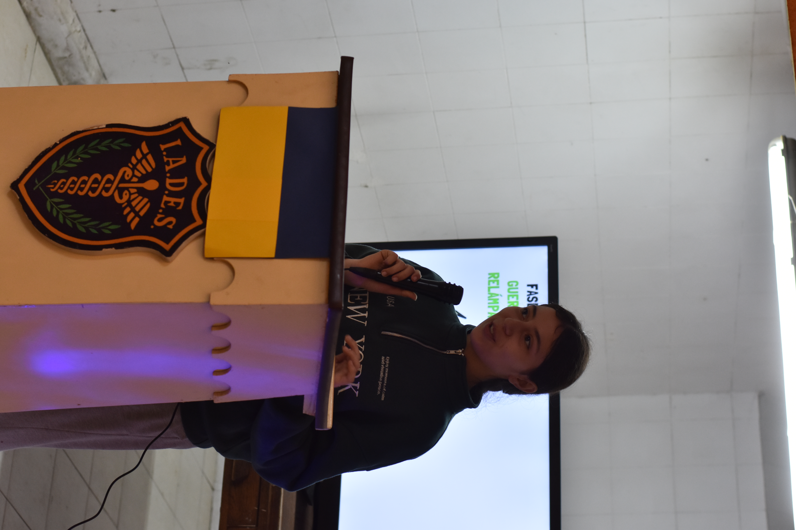

UCRANIA

Estudiantes: Casagrande Ana, Fondevila Rocío, Gomez Moreno Josefina y Zeballos Ariadna
Buenos días, nosotras somos la delegación representante de Ucrania. Nuestro objetivo en esta sesión es representar la posición de Ucrania frente al conflicto con la Federación Rusa, exponiendo nuestros argumentos y defendiendo nuestros intereses de manera diplomática y respetuosa.
También buscaremos escuchar y debatir las posiciones de las delegaciones de Rusia, Palestina, Israel y Estados Unidos, respondiendo a sus argumentos y defendiendo nuestra postura con fundamentos y fuentes confiables. Nuestra finalidad es participar de un debate respetuoso y buscar, mediante el diálogo, posibles soluciones al conflicto.

Nuestra posición se sostiene en el artículo 2 de la carta de la ONU qué establece que los estados deben entenderse de amenazar o utilizar la fuerza contra la integridad territorial o independencia política de otro estado. Es decir, Ucrania sostiene que ningún estado puede modificar las fronteras de otro mediante el uso de la fuerza. La soberanía y la integridad territorial son principios fundamentales de la carta de las Naciones Unidas.
La posición de Ucrania no se basa únicamente en su propia interpretación. En 2022, 143 estados miembros de las Naciones Unidas respaldaron una resolución que condenó los intentos de anexar Donetsk, Lugansky y Zaporiyia (territorios ucranianos) y que exige a Rusia retirar sus fuerzas de estos.

Ucrania reconoce que incluso durante un conflicto armado los Estados deben respetar el derecho internacional y las obligaciones destinadas a proteger a la población civil. Defender la soberanía no significa que cualquier acción esté automáticamente permitida. El artículo 51 de la Carta de la ONU reconoce el derecho inherente de legítima defensa antes un ataque armado.
Ucrania invoca así, el principio "la responsabilidad de proteger" (R2P), adoptado por todos los Estados en 2005, para proteger la población ucraniana contra la agresión rusa y denunciar y además pedir ayuda internacional. Así damos por finalizado nuestro discurso. Muchas gracias.